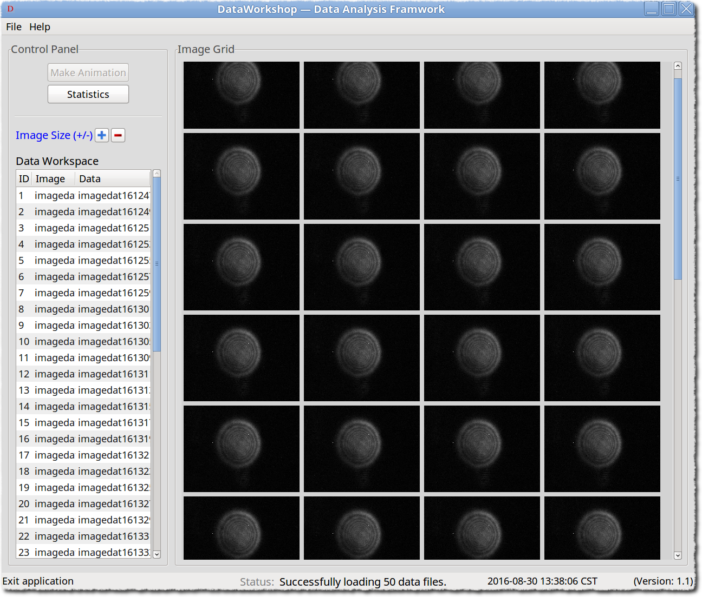

Example 2¶
dataworkshop – Data post-processing app.
Introduction¶
Initially, dataworkshop is created for the data processing tasks, since
not all of the tasks, especially those demanding heavy computing resources,
so we first get all the data that may need, then filter/process by another app, that
is dataworkshop‘s job.
Usage Guide¶
Import Data Files¶
Open dataworkshop as the following image shows, Image Grid panel is the place
where imported data file generated image should be put into, in the Control Panel,
operations like Make Animation (not enabled), Statistics will take the data files
that selected into Data Workspace as the input, to do specific post-processing procedures.
{kind=link}
For example, click File > Open files or shortcut CTRL+O to import hdf5 files that
generated by Auto save operations of imageviewer app. In order to show the data files
in a more informative way, the import/open operation will first transform the data files into
images, then show in grid style, the image size could be adjusted by the Image Size(+/-)
buttons, i.e. increase (+) or shrink (-); when the mouse is hovering over the image,
information will show as a tooltip, including metadata like filename, timestamp, filesize, etc.
{kind=link}
Note
File > Add files (CTRL+A) can be used to continue to add data files into
the current Image Grid.
There are two approaches to add/remove data files into Data Workspace:

- Right click the image files in
Image Grid, chooseTo Workspacemenu item to add the selected file intoData Workspace;- Right click the blank space of
Image Gridpanel, i.e. any space that is not occupied by the images,Add all to workspaceandRemove all to workspaceactions could be applied;- Once the file is already added into
Data Workspace, then the right click on the image should pop upOut Workspaceitem if removing out ofData Workspaceis required.
{kind=link}
Note
When right clicking the image, another available action is Pop up Analysis, which
will show the selected image as a more vivid way, details see Example 6.
Post-processing¶
All the operations to the data files should be implemented in the Control Panel, up to now,
there is Statistics button available to do post-processing operations.
Push Statistics button to open the pop up window, in which, push Radius, will plot the
distribution of the central positions of all the files that in Data Workspace, other mathods
also could be developed to help the user to quickly understand the data, so as to make the next
step decision.
{kind=link}